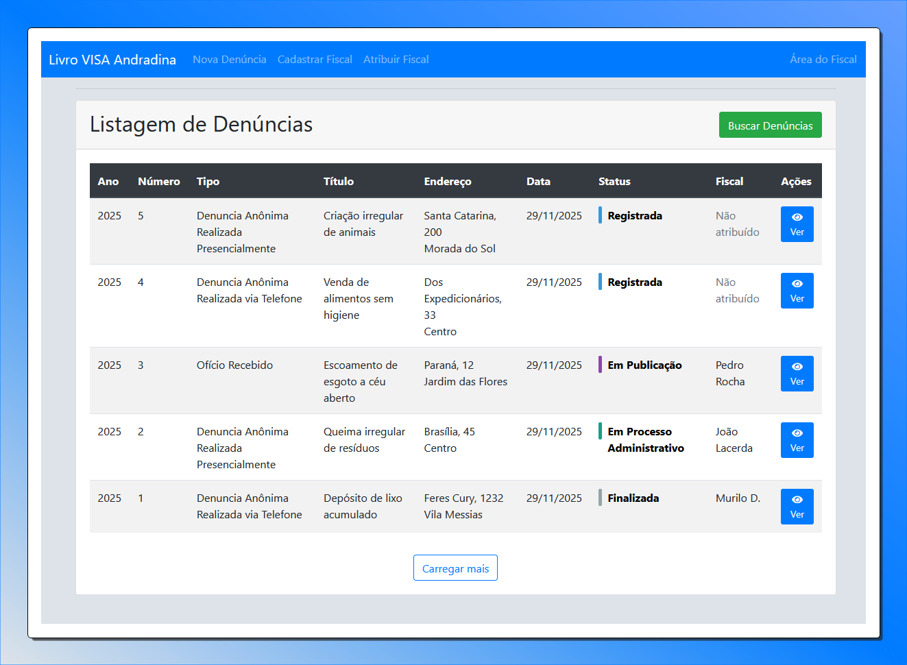

Integra — Acessibilidade Educacional Libras 3D
Plataforma de acessibilidade educacional que integra reconhecimento de voz em tempo real, tradução multilíngue e conversão para Libras através de avatar 3D. Desenvolvido como TCC em Engenharia da Computação, o sistema utiliza tecnologias como Vosk e Google Cloud Speech-to-Text para captura de fala, Google Cloud Translation para tradução multilíngue, e VLibras com animação tridimensional em WebGL.
NodeJs
ExpressJs
WebSocket
MongoDB
EJS
Google Cloud
Livro de Fiscalizações - Vigilância Sanitária

Aplicação Fullstack desenvolvida para a Vigilância Sanitária de Andradina, o sistema substitui o antigo modelo físico, reduzindo o tempo de consulta de aproximadamente 5 minutos para apenas 10 segundos. Fui responsável por toda a concepção, desenvolvimento e implantação da solução, além de cuidar da parte de DevOps e garantir sua utilização contínua pelos agentes no dia a dia.
NodeJs
ExpressJs
PostgreSQL/SQL
DevOps
Bootstrap
EJS